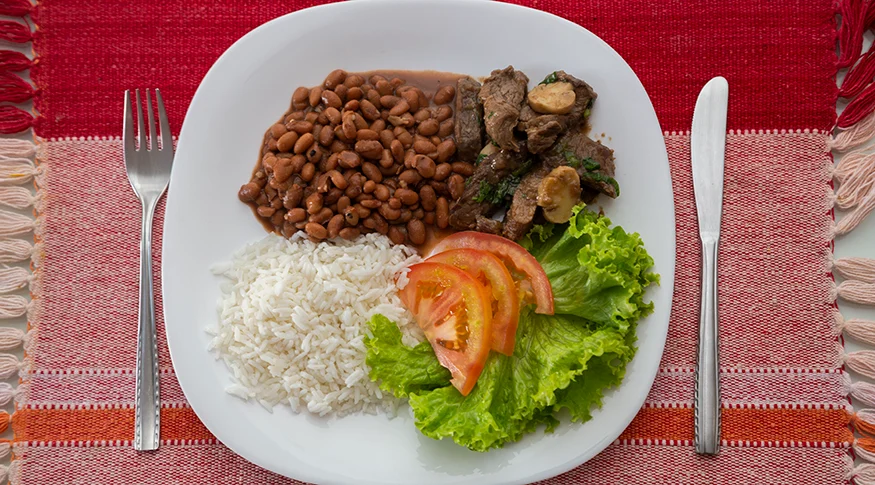

Comida de casa,
todos os dias.
Arroz soltinho, feijão temperado e carne cozida sem pressa. O almoço que você pediria na casa de alguém que cozinha bem — para comer aqui ou receber aí.


O almoço de hoje
Pratos feitos na manhã e bebidas geladas. A sacola é montada aqui e confirmada pelo WhatsApp.
Tempero de quem cozinha todo dia.
Começou com uma panela grande de feijão e vizinhos que apareciam na hora do almoço. A cozinha cresceu, o delivery chegou, mas o jeito continua o mesmo: comprar fresco de manhã, temperar cedo e servir quente.
Nada aqui é congelado ou industrializado. O arroz sai na hora, a carne cozinha por três horas e o feijão descansa no tempero antes de ir ao fogo.
“Comida boa é a que faz querer repetir no dia seguinte.”Conhecer a casa
Simples como pedir em casa.
Escolha no cardápio
Monte a sacola com os pratos do dia e ajuste as quantidades.
Confirme pelo WhatsApp
O pedido chega direto na cozinha. Por lá a gente combina entrega ou retirada.
Coma bem
Marmita bem servida e embalada para chegar quente. Bom apetite.
Rua do Bom Jesus, 120.
Recife Antigo.
Segunda a sábado, das 11h às 22h. Se preferir, a gente leva até você.